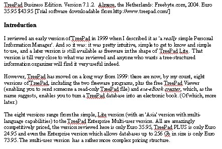

Probably the most common need will be to export to a word-processor by using the .rtf file transfer process. You can export the whole database to a single file, or to have separate files for the articles in the database. The figure below shows what the output looks like when imported into Word:
